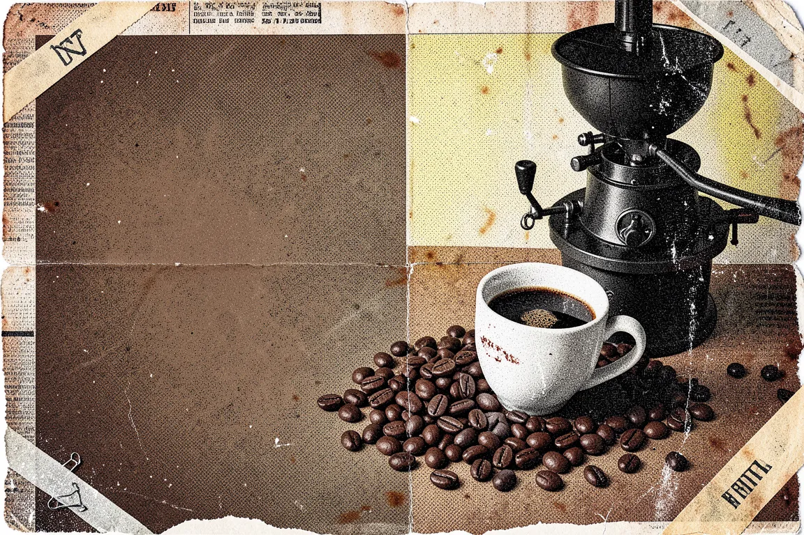

nett · 1990s · også: Grunge-typografi, Dekonstruktivistisk typografi, Ray Gun-stil, Ny typografi på 90-tallet
Lagdelt, slitt skrift, overtrykte fotografier og brutte spalter, satt for hånd i tidlig Macintosh-programvare. David Carson på Ray Gun og studioet Emigre gjorde det til utseendet for alternativ musikk og ungdomsmagasiner på 1990-tallet.

Kjerneidé
Lesbarhet er ikke det samme som kommunikasjon, og en side kan bære stemningen i innholdet ved å se like rå ut som innholdet føles.
Designprinsipper
Legg skrift over skrift og skrift over fotografier i 2 til 4 overlappende tekstlag, og la overlappingene kutte lesbarheten med 10 % til 30 %.
Bland 3 til 5 skrifttyper på ett oppslag, minst én av dem en slitt eller bitmap-skrift, og skift størrelse med et forhold på 3 eller mer.
Bryt spaltenettet: sett én tekstblokk i en vinkel på 90 grader, eller én blokk med en linjelengde på 12 tegn, eller én med 120 tegn.
Legg tekstur på hver flate: skannerstøy, kopikorn, revne papirkanter og halvtonepunkter med 4px til 8px avstand.
Beskjær fotografier hardt, gjør dem uskarpe eller posteriser dem, og trykk dem med 60 % til 100 % kontrast over et flatt mørkt felt.
Behandle sidetall, folio og bildetekst som displayskrift, på 48px til 200px.
Hold paletten til svart, off-white og en eller to skitne toner, og la blekkantene stå ujevne.
Antimønstre
En enkelt nøytral sans-serif i én vekt
Perfekte modulære rutenett med like rennesteiner
Blanke gradienter og polerte vektorskygger
Stockfotografi på et hvitt felt
Romslige tomme marger med en sentrert overskrift
Pastellfargevalg
Pikselnøyaktig justering på tvers av alle elementer